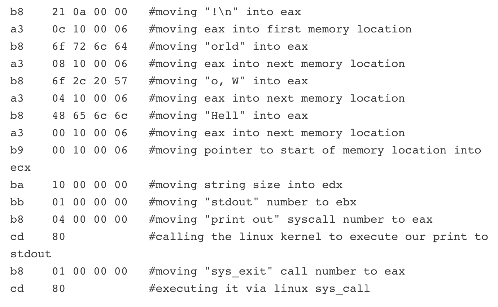

3.1. Compilation¶
It’s time for a history lesson!
In the early days of computer science (late 1940s/early 1950s), programmers had to memorize patterns of 0s and 1s to get their computers to do anything. It was paradise for any computer because they all understood these 0s and 1s perfectly; however, it SUCKED for the engineers because it was impossible to learn.
Things got a little better when programmers were able to convert these sequences of 0s and 1s into Hex (hey, at least it was shorter) but it still was close to impossible to learn. Not convinced? Here’s how you would get the phrase “Hello world” to display on the monitor of your computer using these Hex codes 1.
{kind=link}
Obviously, most programmers of the time felt like this:

Eventually, a computer scientist by the name of David J. Wheeler2 suggested an idea to his colleague, Maurice Wilkes. I imagine the conversation went a little something like this:
Wilkes:

Wilkes: …I can’t keep doing this…there must be a better way!!!!
Wheeler: Here me out…whaaaaat if we just made up some English-esque words to represent this gobbledygook?
Wilkes: Do it. Anything to stop this madness.
And he did! Wheeler created a language called Assembly that made it a bit easier for programmers to write programs because it incorporated English. Don’t get me wrong, it was still pretty difficult to learn, but this idea would shape many of the modern programming languages that we see today (aka if it looks like English, it will be easier to use and learn).
Fast forward to 1995! This is the year Java is invented, and boy, does it look a lot like English. In fact, this is how you would get the phrase “Hello world” to display on the monitor of your computer using Java:
System.out.print("Hello world");
It’s a lot better, right?
Computer scientists across the world instantly fell in love with these “high-level languages” for their ease of use but they ultimately had a problem — computers couldn’t make sense of any of them! So, in an effort to turn these languages back into those pesky 0s and 1s, Grace Hopper built something called a compiler 3. A compiler simply reads programs written in a high-level language, like Java, and turns it into something called Bytecode. Bytecode isn’t quite the 0s and 1s we need, but it is a step in the right direction! AND a compiler can do this without any human intervention.
But how do we get from Bytecode to 0s and 1s? Keep reading to find out how a generation of programmers embraced a life of efficient programming.
- 1
These weird and random characters are collectively referred to as Machine Code. Computers LOVE it. Humans HATE it.
- 2
David J. Wheeler was actually the first person to ever receive a PhD in computer science, the highest degree you can get in the field. He got the degree in 1951 from the University of Cambridge.
- 3
Move over Wheeler, Grace Hopper is in the building! She built the first compiler, and is generally thought of as one of the most distinguished and accomplished computer scientists in the world.